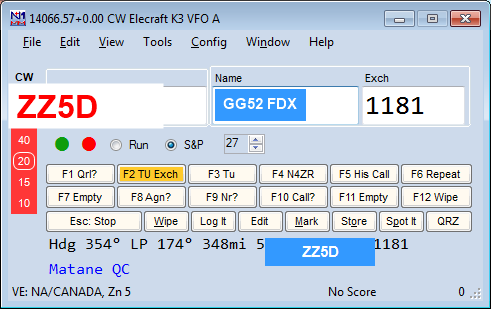
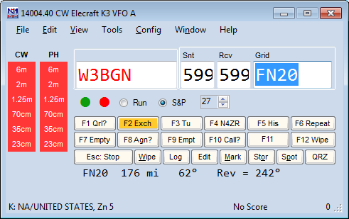
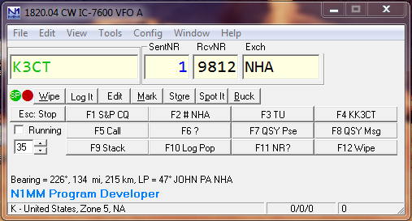

<!DOCTYPE html>
<html lang="pt-BR">
<head>
<script type="text/javascript">
    (function(c,l,a,r,i,t,y){
        c[a]=c[a]||function(){(c[a].q=c[a].q||[]).push(arguments)};
        t=l.createElement(r);t.async=1;t.src="https://www.clarity.ms/tag/"+i;
        y=l.getElementsByTagName(r)[0];y.parentNode.insertBefore(t,y);
    })(window, document, "clarity", "script", "yn210flvy6");
<!-- Google tag (gtag.js) -->
<script>
  window.dataLayer = window.dataLayer || [];
  function gtag(){dataLayer.push(arguments);}
  gtag('js', new Date());

  gtag('config', 'G-T9KJ7E1B84');
<meta charset="UTF-8">
<meta name="viewport" content="width=device-width, initial-scale=1.0">
<title>Call History and Reverse Call History Lookup — Manual N1MM+ em Português</title>
<meta name="description" content="Tradução não-oficial, feita pela comunidade brasileira de radioamadorismo, da seção Call History do manual oficial do N1MM Logger+.">
<meta property="og:title" content="Call History and Reverse Call History Lookup — Manual N1MM+ em Português">
<meta property="og:description" content="Tradução não-oficial, feita pela comunidade brasileira de radioamadorismo, da seção Call History do manual oficial do N1MM Logger+.">
<meta property="og:image" content="https://n1mm.gg52floripadx.com/assets/img/og-image.png">
<meta property="og:url" content="https://n1mm.gg52floripadx.com/setup/call-history/index.html">
<meta property="og:type" content="website">
<meta property="og:site_name" content="Manual N1MM+ em Português">
<meta name="twitter:card" content="summary_large_image">
<meta name="twitter:title" content="Call History and Reverse Call History Lookup — Manual N1MM+ em Português">
<meta name="twitter:description" content="Tradução não-oficial, feita pela comunidade brasileira de radioamadorismo, da seção Call History do manual oficial do N1MM Logger+.">
<meta name="twitter:image" content="https://n1mm.gg52floripadx.com/assets/img/og-image.png">
<link rel="stylesheet" href="../../assets/css/style.css">
<link rel="icon" href="../../assets/favicon-32.jpg" sizes="32x32">
<link rel="icon" href="../../assets/favicon.jpg" sizes="192x192">
<link rel="apple-touch-icon" href="../../assets/favicon.jpg">
<style>
  .bloco-mc { background: var(--fundo-alt); border: 1px solid var(--borda); border-radius: 4px; padding: 10px 14px; font-family: Consolas, monospace; font-size: 0.88em; white-space: pre-wrap; margin: 1em 0; }
</style>
</head>
<body>

<div class="topo">
  <div class="marca">
    <a href="https://n1mm.gg52floripadx.com/">Manual N1MM+ em Português</a>
    <a href="../index.html">&larr; Voltar para Setup</a>
  </div>
</div>

<div class="aviso-traducao">
  <div class="conteudo">
    📖 <strong>Tradução não-oficial</strong>, mantida pela comunidade brasileira de radioamadorismo.
    Termos de interface do programa (nomes de menus, campos e diálogos) foram mantidos em inglês.
    Página original em inglês: <a href="https://n1mmwp.hamdocs.com/setup/call-history/" target="_blank" rel="noopener">n1mmwp.hamdocs.com/setup/call-history</a>.
    Direitos autorais do conteúdo original: N1MM Logger+ Team.
  </div>
</div>

<main>
  <nav class="trilha">
    <a href="https://n1mm.gg52floripadx.com/">Início</a> &raquo;
    <a href="../index.html">Setup</a> &raquo;
    Call History and Reverse Call History Lookup
</nav>

  <h1>Call History and Reverse Call History Lookup <span class="tag-en">EN: Call History</span></h1>

  <div class="sumario">
    <strong>Nesta página</strong>
    <ul>
      <li><a href="#call-history">Call History</a></li>
      <li><a href="#the-call-history-text-file">The Call History Text File</a></li>
      <li><a href="#call-history-import-directives">Call History Import Directives</a></li>
      <li><a href="#associating-call-history-file-with-a-contest">Associating Call History File with a Contest</a></li>
      <li><a href="#identifying-the-call-history-lookup-data-contests">Identifying the Call History Lookup Data Contests</a></li>
      <li><a href="#related-menu-options">Related Menu Options</a></li>
      <li><a href="#reverse-call-history-lookup">Reverse Call History Lookup</a></li>
    </ul>
  </div>

  <h2 id="call-history">Call History (Histórico de Indicativos)</h2>

  <p>O Call History Lookup é um recurso que pode pré-preencher o exchange durante um contest, economizando digitação, ou exibir comentários e notas do usuário para indicativos específicos. As fontes dos dados de Call History podem ser arquivos de outras origens, logs de contests anteriores, ou arquivos de dados que você mesmo montou. Seu clube pode gerar arquivos de Call History para o Sweepstakes, por exemplo, ou você pode gerar o seu a partir do log do ano passado. Você também pode extrair nomes e indicativos do seu log geral, para reconhecer as pessoas pelo nome no ar.</p>

  <p>Antes de usar o Call History Lookup, é preciso habilitá-lo no menu Config da Entry Window (exceção: o campo UserText — veja abaixo), e importar um ou mais arquivos de texto com dados separados por vírgula ou ponto e vírgula.</p>

  <p>Há uma quantidade razoável de arquivos de texto de Call History específicos por contest na seção Call History Files do menu Files deste site. Para muitos de nós, essa é a fonte de dados preferida para o Call History Lookup.</p>

  <div class="caixa-info">
    <strong>Onde estão os arquivos de Call History prontos?</strong>
    <p>Uma quantidade razoável de arquivos de texto de Call History específicos por contest está em <strong>&gt;Downloads &gt;File Explorer &gt;Call History Files</strong> no site. Para muitos de nós, essa é a fonte de dados preferida.</p>
  </div>

  <p>Você também pode montar um arquivo de texto de Call History a partir do log do ano anterior. Basta abrir o log antigo, opcionalmente clicar em &gt;Tools &gt;Clear Call History para esvaziar a tabela de Call History, e depois clicar em Update with Current Log. Para salvar o arquivo de texto de Call History, use a opção Export &gt;Export Call History no menu Files da Entry window, dando ao arquivo exportado um nome fácil de encontrar depois.</p>

  <p>E, claro, você sempre pode carregar arquivos de texto de Call History diretamente no banco de dados, a partir do diretório de usuário Call History Files.</p>

  <p>Se você quiser usar vários logs do mesmo contest, ou combinar vários arquivos de Call History em uma única tabela no banco de dados, basta ir em File &gt;Import &gt;Import Call History e segurar Ctrl enquanto clica em vários arquivos de texto.</p>

  <p><strong>Os dados de Call History não ficam no mesmo banco de dados dos QSOs. A tabela de Call History permanece até ser substituída por outro conjunto de dados. Um arquivo de texto de Call History (ou vários) pode ser importado manualmente, ou associado a um contest específico na aba Associated Files da janela Contest Setup. Como você pode imaginar, é fácil esquecer que está com a tabela de Call History errada no banco, deixada do fim de semana anterior. Recomendamos adicionar o nome do contest aos arquivos de dados de Call History, como explicado na seção "Identifying the Call History Lookup Data Contests" abaixo.</strong></p>

  <p>Quando um indicativo é digitado na Entry window e o foco se move para o campo Exchange (pressionando a barra de espaço, ou, com o modo Enter Sends Messages (ESM) ativo, pressionando Enter), a tabela de Call History é consultada. Se o indicativo for encontrado, os dados associados aparecem na linha de "beam heading" (rumo de antena) da Entry window. Se os campos de exchange do contest estiverem vazios, os dados recuperados também são usados para pré-preencher os campos de exchange relevantes na Entry window.</p>

  <div class="caixa-info">
    <strong>O Movimento do Cursor Dispara a Consulta</strong>
    <p>O evento que dispara a consulta de Call History é o cursor sair do campo de indicativo e ir para o campo de exchange na Entry window. Em modo ESM, há situações em que pressionar Enter não move o cursor para o campo de exchange, e nesses casos a consulta não é disparada por Enter. Em particular, em modo S&amp;P, se a opção "ESM sends your call once in S&amp;P..." não estiver selecionada, pressionar Enter para enviar a mensagem F4 deixa o cursor ainda no campo de indicativo, então a consulta não é feita; pressionar a barra de espaço move o cursor para o campo de exchange e dispara a consulta.</p>
  </div>

  <p>Se "Show User Information" estiver marcado no menu de botão direito da Entry window, os dados da tabela de Call History aparecem na linha User Data. Mesmo com o Call History Lookup desabilitado, os dados do campo User Text da tabela ainda aparecem na linha User Data, abaixo da linha Bearing.</p>

  <p>Alguns exemplos da Entry window. O primeiro mostra os dados de exchange e os dados de usuário (o QTH dele, neste caso) exibidos.</p>

  

  <p>Em contests de VHF, o gridsquare da tabela de Call History é usado para calcular o rumo de antena mostrado no Bandmap.</p>

  

  <h3 id="the-call-history-text-file">The Call History Text File (O Arquivo de Texto de Call History)</h3>

  <p>Esta seção descreve o layout do arquivo de texto padrão de Call History e a tabela do banco de dados para a qual ele é importado.</p>

  <p>O arquivo de texto de Call History pode ser criado em qualquer editor de texto — o Notepad serve bem. O arquivo é delimitado por vírgula ou ponto e vírgula, ou seja, os dados ficam em posições específicas. A estrutura padrão, também refletida na tabela do banco de dados, é:</p>

  <p><strong>Call, Name, Loc1, Loc2, Sect, State, CK, BirthDate, Exch1, Misc, Power, CqZone, ITUZone, UserText, LastUpdateNote</strong>. Essa ordem é fixa; se você usar a ordem padrão, precisa incluir uma vírgula em cada registro do arquivo de texto para cada campo, mesmo se vazio. Exemplo:</p>

  <p><strong>N9RV,,,,06,,-1,1900-01-01,,,,Log update edit fields</strong></p>

  <p>Como se vê, o arquivo tem vários campos vazios antes de chegar a "06", que é o número da zona ITU, colocado no campo Sect, porque este contest usa o campo Sect para pré-preencher a zona da estação.</p>

  <h4 id="downloading-call-history-text-files">Downloading Call History Text Files (Baixando Arquivos de Texto de Call History)</h4>

  <p>Arquivos de texto de Call History já prontos estão disponíveis no site, em &gt;Downloads &gt;Category Menu &gt;Call History Files. Baixe o arquivo para a subpasta CallHistoryFiles, na sua área de arquivos de usuário do N1MM+ (a indicada pelo menu Help &gt; Open Explorer on User Files Directory).</p>

  <h3 id="call-history-import-directives">Call History Import Directives (Diretivas de Importação de Call History)</h3>

  <p>Você pode mover ou excluir colunas de dados, mapear a seção ARRL para o estado, mapear o estado para a seção ARRL, ou truncar um gridsquare de seis caracteres para quatro. Isso é feito com comandos de diretiva de importação, colocados entre "!!" para indicar ao programa que são instruções, não dados. Ao ler um comando de diretiva, a rotina de importação segue aquela instrução até ler outro comando de diretiva, ou até todos os dados serem importados. Comandos de diretiva podem se repetir se a estrutura de dados ou a ordem dos campos mudar ao longo do arquivo.</p>

  <p>Lista dos comandos de diretiva de importação que podem ser usados em um arquivo de texto de Call History:</p>

  <p>&nbsp; !!Order!! – define a ordem dos dados separados por vírgula que seguem<br>&nbsp; !!MapStateToSect!! – preenche o campo Sect vazio a partir da informação de State<br>&nbsp; !!FourCharGridSq!! – trunca gridsquares de 6 caracteres para 4 caracteres<br>&nbsp; !!AppendUserText!! – anexa texto adicional do usuário ao campo UserText (padrão)<br>&nbsp; !!NoAppendUserText!! – não anexa texto do usuário ao campo UserText; o novo dado substitui o anterior<br>&nbsp; !!Validate50State!! – ignora qualquer dado de estado que não seja um dos 50 estados<br>!!NoLoc2AltGrid!! – não move o gridsquare existente em Loc1 para Loc2 como local alternativo<br>!!MapOnSection!! – mapeia GTE, ONN, ONE, ONS para a seção ON<br>!!ValidateArrlSection!! – remove qualquer seção que não seja uma seção ARRL (inclui VI, PR); pode ser usada para remover ON</p>

  <p>Todo arquivo de texto de Call History exportado lista as diretivas de importação, os nomes dos campos e o tamanho máximo. Seguem os nomes dos campos de Call History com o tamanho máximo. A rotina de importação trunca qualquer campo que exceda o máximo, descarta qualquer valor de CK que não seja um número, e descarta qualquer Birthdate que não seja uma data. Se nenhuma diretiva !!Order!! for lida durante a importação, a rotina espera os dados nesta ordem, separados por vírgula:</p>

  <p>&nbsp; Call(15), Name(20), Loc1(6), Loc2(6), Sect(8), State(8), CK(#), Birthdate(data), Exch1(12), Misc(15), Power(8), CqZone(#), ITUZone(#), UserText(60)</p>

  <p>Exemplo de dados de Call History que importam sem uma diretiva:</p>

  <p><strong>K3CT, JOHN , , , ,PA , , ,NHA, , N1MM Program Developer</strong></p>

  <p>Como se vê, cada vírgula marca um campo. Vírgulas seguidas significam campos vazios. Espaços podem ser adicionados para facilitar contar as vírgulas. Se este arquivo de uma linha fosse importado na tabela de Call History, com o Call History Look Up habilitado, a Entry window do PA QSO Party ficaria assim ao digitar o indicativo K3CT e pressionar a barra de espaço (ou Enter, com ESM ativo):</p>

  

  <p>Como se pode imaginar, garantir o número certo de vírgulas entre os dados no arquivo de texto pode ser um problema. Felizmente, o comando !!Order!! oferece uma solução simples. Por exemplo, você cria um arquivo de texto assim:<br><strong>!!Order!!, Call, Name, CK, Sect</strong><br><strong>N4ZR, Pete ,54 ,WV</strong><br><strong>N3OC, Brian, 67, MDC</strong></p>

  <p>Ao carregar esse arquivo na tabela de Call History, os dados vão para os lugares corretos, e ao operar no Sweepstakes, por exemplo, com o Call History Lookup habilitado, o programa pré-preenche o check e a seção no campo Exchange, e mostra o nome e os demais dados na linha Bearing da janela Exchange. Essa redundância é proposital, pois se você começar a editar o Exchange e perceber que os dados pré-preenchidos já estavam certos, eles ficam ali como referência rápida.</p>

  <p>Essa mudança tornou muito mais fácil gerar arquivos de texto de Call History para importar. Por exemplo, você pode gerar um arquivo com indicativos, nomes, checks e seções de todo mundo que você trabalhou no Sweepstakes do ano passado, escrevendo a linha !!Order!! correta, assim:<br><strong>!!Order!!,Call,Name,CK,Sect</strong></p>

  <p>A diretiva !!Order!! também pode ser usada para ignorar colunas de dados. Por exemplo, se o arquivo de dados tem colunas extras, como abaixo:<br><strong>DD3JN, 70 23, GERD, JO42AI,JO31OE</strong><br><strong>PA1M, 144 70, Carel, JO33FE, JO33II</strong></p>

  <p>A segunda coluna pode ser ignorada com a diretiva antes dos dados:<br><strong>!!Order!!, Call,, Name, Loc1, Loc2</strong><br><strong>DD3JN, 70 23, GERD, JO42AI,JO31OE</strong><br><strong>PA1M, 144 70, Carel, JO33FE, JO33II</strong></p>

  <p>Alternativamente, a segunda coluna de dados pode ser colocada no campo <strong>UserText</strong> com esta diretiva:<br><strong>!!Order!!,Call,UserText,Name,Loc1,Loc2</strong><br><strong>DD3JN, 70 23, GERD, JO42AI,JO31OE</strong><br><strong>PA1M, 144 70, Carel, JO33FE, JO33II</strong></p>

  <p>A seção Supported Contests deste manual pode indicar o(s) campo(s) de Call History usados para a informação de exchange. Se a informação do campo não estiver listada lá, siga este procedimento para determinar qual campo de Call History preencher:</p>

  <ul>
    <li>Abra um novo log de contest</li>
    <li>Registre alguns QSOs fictícios contendo os exchanges de interesse</li>
    <li>Clique em Tools, Clear Call History, depois Update with Current Log</li>
    <li>Exporte o Call History (File, Export, Export Call History) e examine o texto de QSO exportado</li>
    <li>Coloque os dados de exchange no campo de Call History correspondente. A codificação de alguns contests é complexa — não é incomum encontrar contests que guardam informação em campos para cálculo de pontos, determinação de multiplicadores ou exportação Cabrillo. Por isso, pode não ser necessário preencher todos os campos de Call History</li>
  </ul>

  <p>Se a importação do seu arquivo de Call History não funcionar corretamente, revise a(s) diretiva(s) de importação para garantir que combinam com os nomes dos campos. Por exemplo, use <strong>Sect</strong>, não sec ou Sec, e <strong>Ck</strong>, não Check. <strong>Maiúsculas/minúsculas não importam nos nomes dos campos.</strong> Todos estes nomes importam dados para o campo <strong>Sect</strong>: Sect, SECT, sect, sEcT, SeCt. Se os problemas continuarem, poste uma mensagem no reflector de e-mail do N1MM Logger pedindo ajuda a outros usuários.</p>

  <h3 id="associating-call-history-file-with-a-contest">Associating Call History File with a Contest (Associando um Arquivo de Call History a um Contest)</h3>

  <p>Se você quiser que um arquivo específico de Call History Lookup seja carregado e habilitado sempre que iniciar aquele contest, adicione o nome do arquivo na aba Associated Files do log de contest. A partir daí, sempre que esse contest for aberto em qualquer banco de dados, o arquivo indicado será importado.</p>

  <p>Ao clicar no botão Change do Call History Filename, se o seu computador estiver conectado à Internet, o programa busca os arquivos de Call History daquele contest no site do N1MM Logger+ e oferece atualizar o arquivo atual com o mais recente do site. Se você recusar a atualização, o programa abre uma janela padrão de abertura de arquivo na pasta CallHistoryFiles da sua área de arquivos de usuário, para você escolher seu próprio arquivo em vez de um baixado.</p>

  <h3 id="identifying-the-call-history-lookup-data-contests">Identifying the Call History Lookup Data Contests (Identificando os Contests dos Dados de Call History)</h3>

  <p>Se você adicionar o nome curto do contest (o mesmo usado na janela Contest Setup) ao arquivo de texto de Call History como um comentário (precedido de "#"), o programa habilita ou desabilita automaticamente o Call History Lookup ao abrir o log daquele contest ou ao importar os dados de Call History. Quando a opção de Call History Lookup é alterada, uma mensagem curta aparece na Entry Window indicando a ação.</p>

  <p>Os dados de Call History Lookup carregados podem ser identificados para uso em mais de um contest, adicionando vários comentários de nome de contest, como no exemplo abaixo (sem as aspas):<br>"#NAQPCW"<br>"# naqpssb"<br>Para QSO parties, é necessária a sigla do estado depois do nome do contest. Note o espaço antes do estado. Exemplo:<br>"# QSOParty PA"</p>

  <p>– O "#" precisa ser o primeiro caractere da linha. É permitido um ou mais espaços depois do "#".<br>– Só é permitido um nome de contest por linha.<br>– Associações de contest duplicadas são ignoradas.<br>– O nome do contest pode ser maiúsculo, minúsculo ou misto.<br>– Os nomes de contest são validados; se a validação falhar, a associação é ignorada.<br>– O usuário pode ligar ou desligar o Call History Lookup manualmente — a associação não é verificada ao iniciar o programa.<br>– Os identificadores de associação de contest são exportados junto com a exportação do arquivo de Call History.</p>

  <h3 id="related-menu-options">Related Menu Options (Opções de Menu Relacionadas)</h3>

  <ul>
    <li><strong>&gt;Config &gt;Enable Call History Lookup</strong>
      <ul><li>Marque para habilitar o Call History Lookup</li></ul>
    </li>
    <li><strong>&gt;File &gt;Import &gt;Import Call History</strong>
      <ul><li>Selecione o(s) arquivo(s) a importar. Todas as informações da tabela de Call History no banco Admin são apagadas, e as informações importadas do arquivo as substituem</li></ul>
    </li>
    <li><strong>&gt;Tools &gt;Update Call History with Current Log</strong>
      <ul><li>Atualiza a tabela de Call History em memória e no banco Admin com os QSOs do log atual. Contatos novos são adicionados; existentes são atualizados. Para os 2 campos de grid, o comportamento é um pouco diferente: quando os dois já estão preenchidos e um novo terceiro grid é logado, o segundo (mais antigo) é removido e substituído pelo conteúdo do primeiro, e o novo grid ocupa a primeira posição. A mesma mudança de posição acontece quando só o primeiro grid está preenchido e um novo precisa ser adicionado a partir do log. Um grid de 4 dígitos é sobrescrito por um de 6 dígitos quando os primeiros 4 caracteres são iguais. Mudanças feitas com esta opção são temporárias; para guardar uma cópia permanente da tabela de Call History com as mudanças, use o item de menu <strong>File &gt; Export &gt; Export Call History</strong>, descrito abaixo</li></ul>
    </li>
    <li><strong>&gt; Tools &gt; Clear Call History then Update with Current Log</strong>
      <ul><li>Como acima, mas limpa a tabela de Call History antes de adicionar os contatos do log atual. Pode ser usado para começar uma nova tabela de Call History</li></ul>
    </li>
  </ul>

  <ul>
    <li><strong>&gt;File &gt;Export &gt;Export Call History</strong>
      <ul><li>Exporta as informações da tabela de Call History. É muito importante, principalmente se você alterou a tabela, reexportar os dados como um arquivo de texto de Call History. <strong>Caso contrário, as mudanças serão perdidas.</strong> Você pode renomear o arquivo de texto exportado — por exemplo, um arquivo de SS de 2008 pode ser renomeado para SS de 2009, indicando que foi atualizado</li></ul>
    </li>
  </ul>

  <p>Você <strong>pode</strong> importar qualquer arquivo de Call History que já usava antes, sem uma diretiva !!Order!!. Ao exportar um arquivo de texto de Call History, o programa preenche as vírgulas necessárias para a ordem padrão, além de -1 para cada CK vazio e 1900-01-01 para cada Birthdate vazio. Isso garante compatibilidade com seus arquivos de Call History antigos.</p>

  <h2 id="reverse-call-history-lookup">Reverse Call History Lookup (Consulta Reversa de Call History)</h2>

  <p>Além da consulta normal de Call History, em que você digita um indicativo na Entry window e o programa pré-preenche o exchange com base nos dados do arquivo de Call History, também existe a consulta reversa (Reverse Call History Lookup), em que você digita um exchange na Entry window e o programa busca no log e no arquivo de Call History indicativos que correspondam àquele exchange. Isso não funciona em todos os contests (por exemplo, não faz sentido para números seriais, e não funciona no Sweepstakes, por causa do exchange complicado). Se a opção de Call History Lookup estiver selecionada, a consulta reversa busca tanto no arquivo de Call History quanto no log.</p>

  <p>A consulta reversa é habilitada por um item no menu de botão direito da janela Check. Se o recurso não estiver disponível para aquele contest, o item de menu fica acinzentado. Uma vez habilitada, você pode digitar um exchange (ou parte dele) no campo de exchange da Entry window, e, se o número de caracteres digitados for igual ou maior que o limiar (ajustável em outro item do menu de botão direito), o programa busca no log e na tabela de Call History indicativos cujo exchange corresponda ao digitado. Até 100 indicativos correspondentes aparecem na janela Check. Depois de identificar o indicativo correto entre os encontrados, clique nele na janela Check, e o indicativo e o exchange são transferidos para a Entry window.</p>

  <p>Se um indicativo completo ou parcial já estiver digitado no campo de indicativo da Entry window antes do exchange, só indicativos do log ou do arquivo de Call History que correspondam a esse indicativo parcial aparecem na janela Check, listados abaixo dos indicativos correspondentes normais preenchidos a partir do log e do arquivo SCP.</p>

  <p>Você também pode controlar se a correspondência do exchange parcial pode ser encontrada em qualquer parte do campo de exchange do log e do arquivo de Call History, ou se precisa começar pelo primeiro caractere (ou seja, se BC corresponde a AABCD, ABC, BC, BCDE etc., ou só a BC, BCDE etc.). Limitar a correspondência aos primeiros caracteres e/ou aumentar o limiar de caracteres correspondidos deixa as consultas mais rápidas e reduz o número de indicativos encontrados.</p>

  <div class="caixa-info">
    <strong>Os Nomes Precisam Corresponder</strong>
    <p>Tanto para pré-preencher o exchange quanto para a consulta reversa, o nome do campo onde o dado é guardado no arquivo de Call History precisa corresponder ao nome do campo usado naquele contest específico. Por exemplo, se o estado/província faz parte do exchange, dependendo do contest, essa parte pode corresponder ao campo State, Sect ou Exch1 no arquivo de Call History. Use a diretiva !!Order!! para garantir que os dados do arquivo de Call History fiquem associados ao nome de campo correto para o contest.</p>
    <p>Por exemplo, se você tem um arquivo de Call History para o NAQP assim:</p>
    <p><strong>!!Order!!,Call,Name,State</strong><br><strong>K3CT,John,PA</strong></p>
    <p>então, para usar o mesmo arquivo em um QSO Party estadual, você pode precisar mudar a primeira linha do arquivo para <strong>!!Order!!,Call,Name,Exch1</strong>, mantendo o resto dos dados igual. Você pode determinar quais campos são usados em um determinado tipo de contest criando uma instância fictícia do contest, registrando alguns contatos falsos típicos, usando o menu Tools &gt; Clear Call History then Update with Current Log, exportando o arquivo de Call History para um arquivo de texto temporário, e examinando esse arquivo em um editor de texto para ver quais nomes de campo são usados para quais campos de exchange naquele tipo de contest. Em alguns tipos de contest, você pode encontrar o mesmo dado de exchange em dois campos do arquivo de Call History — nesses casos, pode ser preciso experimentar para determinar qual(is) campo(s) é(são) usado(s) na consulta reversa.</p>
  </div>

</main>

<footer class="rodape">
  <div class="conteudo">
    Conteúdo original: <a href="https://n1mmwp.hamdocs.com/setup/call-history/" target="_blank" rel="noopener">N1MM Logger+ Documentation</a>,
    Copyright &copy; N1MM Logger+ Team. Tradução para PT-BR: comunidade brasileira de radioamadorismo.
    Esta é uma tradução não-oficial, sem vínculo com os autores originais.<br>
    Projeto do <a href="https://gg52floripadx.com/" target="_blank" rel="noopener">GG52 Floripa DX</a> — iniciativa de <a href="https://pp5kj.com" target="_blank" rel="noopener">PP5KJ</a>.
  </div>
</footer>

</body>
</html>
